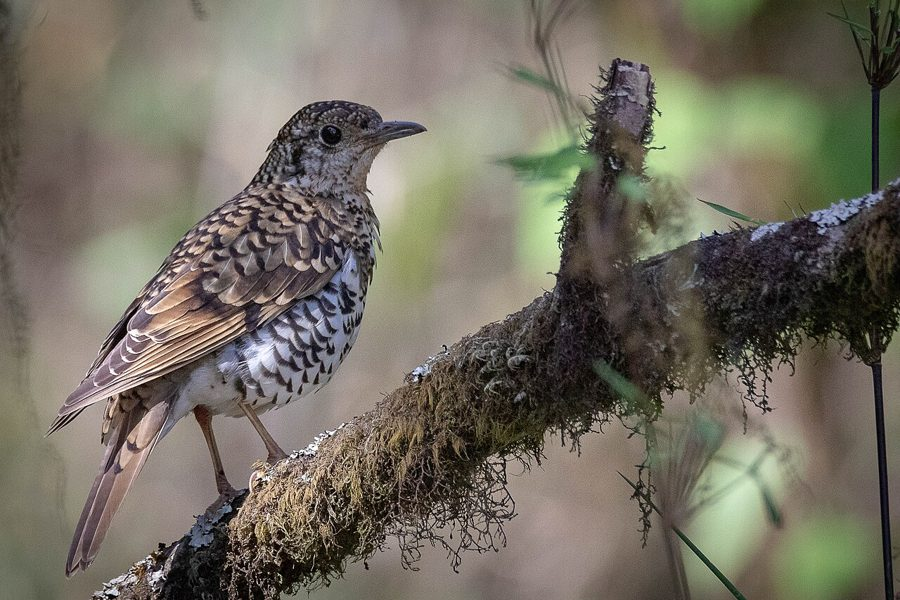

स्केली थ्रशScaly Thrush
Zoothera dauma · Turdidae · BRD-0331

- Scientific name वैज्ञानिक नाम
- Zoothera dauma (Latham, 1790)
- Family कुल
- Turdidae
- Hindi हिंदी
- स्केली थ्रश
- Local names स्थानीय नाम
- scaly thrush, golden thrush, speckled thrush, white's thrush
- Status here यहाँ की स्थिति
- native
- Movement आवागमन
- Winter visitor
- Known from कहाँ दर्ज
- Others have published records from the Basti–Ayodhya districts बस्ती–अयोध्या के ज़िलों से दूसरों के प्रकाशित अभिलेख
- IUCN IUCN
- LC
- Review समीक्षा
- not yet reviewed
When to look कब देखें
Winter visitor शीतकालीन प्रवासी. Expected mainly in November, December, January, February, March. मुख्यतः नवंबर, दिसंबर, जनवरी, फ़रवरी, मार्च में अपेक्षित।
Winter visitor from Himalayan temperate forests; arrives in late autumn and departs by March. All migrants and visitors →
Tell it apart from इनसे अलग पहचानें
स्केली थ्रश / Scaly Thrush
Zoothera dauma (Latham, 1790) — Turdidae
स्केली थ्रश — सर्दियों में हिमालय के ऊंचे पहाड़ों से उत्तर भारत के मैदानी जंगलों और पुराने बागों में आने वाला एक शर्मीला, एकांतप्रिय और जमीन पर रहने वाला थ्रश पक्षी है। इसका पूरा शरीर सुनहरे-जैतूनी रंग का होता है, जिस पर काले रंग के अर्धचंद्राकार या मछली के शल्कों (स्केल्स) जैसे सुंदर निशान बने होते हैं, जिसके कारण इसे 'स्केली थ्रश' कहा जाता है। यह जमीन पर गिरी गीली और सड़ी-गली पत्तियों को अपनी चोंच से तेजी से उलट-पलटकर उनके नीचे छिपे केंचुओं, घोंघों और कीड़ों को खाता है।
Quick Identification त्वरित पहचान
| Feature | Description |
|---|---|
| Habit | Secretive, ground-dwelling, solitary thrush of shaded moist forest floor |
| Plumage | Golden-buff to olive-brown overall, densely scaled with black crescentic marks |
| Head | Pale golden-buff face with dark crescent behind ear-coverts and pale eye ring |
| Underwing | Conspicuous black and white patterned underwing band visible in flight |
| Bill | Stout, dark brown bill adapted for probing and flicking damp leaf litter |
| Feeding Motion | Rhythmic, characteristic 'bob and shudder' movement while pausing on the ground |
| Flight | Explosive, silent flight when flushed from litter into low dense cover |
Field tip: Walk along shaded damp nullahs or dense mango orchards in winter. Look for an upright bird vigorously tossing dead leaves with its bill. The overall golden-olive plumage densely covered in black crescent scales is unique among Indian thrushes.
हिंदी:
इसका पूरा शरीर सुनहरे-भूरे रंग का होता है जिस पर मछली के शल्कों जैसे काले निशान होते हैं।
उड़ते समय इसके पंखों के नीचे काली और सफेद धारियों वाली सुंदर पट्टी दिखती है।
यह जमीन पर गिरी सूखी पत्तियों को चोंच से उछाल-उछाल कर उनके नीचे कीड़े खोजता है।
Morphology आकारिकी
Measurements as given by Baker (1924 as Oreocincla dauma):
| Measurement | Range |
|---|---|
| Wing | wing 130 to 149 mm. (Baker 1924 as Oreocincla dauma) |
The Scaly Thrush is a large, sturdy forest thrush displaying robust terrestrial proportions. The entire upper plumage is rich golden-olive to buffish-brown, with each individual feather bordered by a prominent, black crescentic terminal margin that imparts a striking scaly texture across the back.
The chin, throat, breast, and flanks are pale whitish-buff, densely studded with heavy black crescent scales. The center of the abdomen and under tail-coverts are pure white with fewer markings. The flight feathers are dark brown edged with golden-buff, marked on the underside by a prominent black and white wing bar.
The bill is stout, straight, and dark horny-brown, with a paler yellowish-flesh base to the lower mandible. The legs and feet are pale fleshy-yellow. The tail has fourteen rectrices, with the outer feathers tipped with dirty white.
Vocalisations. A quiet species in its winter quarters, it rarely utters more than a thin, high-pitched seee call when startled. On its breeding grounds, it produces a rich, whistling nocturnal song.
हिंदी:
इसके पंखों का फैलाव 130 से 149 मिमी तक होता है।
इसके पूरे शरीर पर काले अर्धचंद्राकार शल्क बने होते हैं जिससे यह जमीन पर पूरी तरह छिप जाता है।
डरने पर यह बहुत बारीक और हल्की सीटी जैसी आवाज निकालता है।
Behaviour & Ecology व्यवहार और पारिस्थितिकी
Zoothera dauma is an obligate terrestrial forager, spending almost its entire day walking deliberately across the forest floor among deep, decaying leaf litter. It advances with slow, measured hops, pausing abruptly to execute a peculiar shuddering or foot-trembling motion that flushes concealed soil invertebrates.
The bird employs its stout bill as a lever, flicking away heavy damp leaves to expose the damp humus beneath. When startled by an approaching observer, it freezes motionless against the leaf litter, relying on its disruptive scaly camouflage. If pressed, it flushes silently and swiftly into a nearby low branch, perching motionless with its back turned.
हिंदी:
यह जमीन पर सूखी पत्तियों के बीच बहुत धीरे-धीरे चलता है और पत्तों को पलटता रहता है।
खतरा देखकर यह जमीन पर बिल्कुल पत्थर की तरह जम जाता है ताकि कोई इसे देख न सके।
Life Cycle / Phenology जीवन चक्र
In the Himalayas between 7,000 and 10,000 feet, breeding takes place during May and June (Baker 1924, p. 159). In winter it visits the foothills and adjacent northern plains.
The nest is a wide cup made chiefly of green moss mixed with leaves, roots, and grass, lined with fine roots and placed at a moderate height in a densely-foliaged tree. A small clutch of eggs is laid and incubated for a few weeks until hatching.
हिंदी:
हिमालय में 7,000 से 10,000 फीट की ऊंचाई पर यह मई और जून में प्रजनन करता है (बेकर 1924)।
सर्दियों में यह तराई और आसपास के मैदानी इलाकों में चला आता है।
यह पेड़ों पर काई, पत्तियों और जड़ों से कटोरे जैसा घोंसला बनाता है।
Host Plants or Prey आहार
The Scaly Thrush is a specialized consumer of ground-dwelling leaf-litter invertebrates:
- Earthworms pulled from damp humus beneath rotting logs and leaves
- Land snails and slugs
- Ground beetles, weevils, wireworms, and wood-boring larvae
- Soil invertebrates including centipedes and millipedes
- Fallen soft forest berries taken opportunistically
हिंदी:
इसका मुख्य आहार जमीन के केंचुए, घोंघे, जमीन के कीड़े, कनखजूरे और नीचे गिरे हुए छोटे जंगली फल हैं।
Predators / Natural Enemies शत्रु व परभक्षी
Hawks, owls, and small carnivores take birds of this size. No source opened for this atlas names a specific predator of this bird.
हिंदी:
बाज़, उल्लू और छोटे मांसाहारी इस आकार के पक्षियों का शिकार करते हैं। इस एटलस के लिए खोले गए किसी स्रोत में इस पक्षी के किसी विशिष्ट शिकारी का नाम नहीं है।
Agricultural / Human Relevance कृषि व मानव संदर्भ
The Scaly Thrush is a ground feeder consuming insects and berries in forest undergrowth (Baker 1924, p. 159). It is protected under the Wildlife (Protection) Act, 1972.
हिंदी:
स्केली थ्रश जमीन पर सूखी पत्तियों के बीच कीड़े और जंगली बेर खाता है (बेकर 1924)। यह वन्यजीव (संरक्षण) अधिनियम, 1972 के तहत संरक्षित है।
Expected Locally स्थानीय रूप से अपेक्षित
Not a field record. Written from published accounts for eastern Uttar Pradesh. No confirmed local sighting yet — if you have seen it, that is what the atlas needs.
अभी तक स्थानीय पुष्टि नहीं। यह विवरण प्रकाशित स्रोतों से है, किसी अवलोकन से नहीं।
Search along damp, shaded nullahs, overgrown mango groves, and dense sal undergrowth during winter months.
GBIF holds published records from these districts.
A first record would be a photograph of an active individual with place and date, sent through the About page.
Distribution वितरण
Global and historical range: Breeds in the Himalayas, northern Asia, and parts of East and Southeast Asia. Winters south across the northern and peninsular Indian plains, Bangladesh, Myanmar, and northern Indochina.
Regional status: Regular winter visitor in small numbers to shaded groves, riverine forest patches, and orchards across eastern Uttar Pradesh between November and March.
हिंदी:
यह हिमालय, रूस और पूर्वी एशिया में प्रजनन करता है और सर्दियों में भारत के मैदानों में आता है।
अवध और पूर्वांचल के पुराने बगीचों और तराई के जंगलों में यह सर्दियों में दिखाई देता है।
Research Questions शोध प्रश्न
- What are the micro-substrate characteristics (litter depth, moisture, soil compaction) that determine winter site occupancy in Zoothera dauma? / सर्दियों में बगीचों और वनों में ठहरने के लिए यह पक्षी सूखी पत्तियों की गहराई और नमी के किन मानकों को चुनता है?
- How does the peculiar 'foot-trembling' foraging behavior enhance prey capture rates in damp versus dry leaf litter? / जमीन पर पैर थपथपाकर कीड़े निकालने का इसका अनोखा तरीका सूखी और गीली पत्तियों में कितना असरदार होता है?
- What is the extent of winter home-range fidelity among individuals returning to the same orchard across years?
- How do ambient winter temperatures in the Terai influence daily foraging activity budgets?
- What are the primary dietary shifts between early winter soil invertebrates and late winter fruiting tree resources?
Similar Species मिलती-जुलती प्रजातियाँ
| Species | How to tell apart | हिंदी | |
|---|---|---|---|
| [[white_rumped_shama\ | White-rumped Shama]] (Copsychus malabaricus) | Slender songbird with long black and white tail, black upperparts, and chestnut underparts | शामा |
| [[blue_capped_rock_thrush\ | Blue-capped Rock Thrush]] (Monticola cinclorhynchus) | Smaller with bright cobalt-blue crown and orange belly (male); scaled female lacks golden tone | ब्लू-कैप्ड रॉक थ्रश |
Field rule: The large plump thrush build, golden-olive ground color, and overall covering of dense black crescent scales distinguish the Scaly Thrush from all other woodland birds.
हिंदी:
बड़ा आकार, सुनहरी-जैतूनी रंगत और पूरे शरीर पर मछली के छिलकों जैसे काले अर्धचंद्राकार शल्क इसकी अचूक पहचान हैं।
Taxonomy & Classification वर्गीकरण
Original description. Described by John Latham in 1790 in Index Ornithologicus (vol. 1, p. 362), under the basionym Turdus dauma.
Synonyms and historical names. Stuart Baker (1924, p. 158) treated the species under Oreocincla dauma. Formerly also known as White's Thrush or Golden Thrush.
Subspecies. Multiple subspecies are recognized; Himalayan breeding birds wintering across northern India represent the nominate race Zoothera dauma dauma (Latham, 1790).
Family and order placement. Order Passeriformes; family Turdidae (true thrushes); genus Zoothera.
IUCN status rationale. Evaluated as Least Concern (LC) on the IUCN Red List due to its immense global breeding distribution and large, stable population.
हिंदी:
लैथम ने 1790 में इसका वर्णन किया था। इसे पहले Oreocincla dauma कहा जाता था। यह टर्डिडी (थ्रश) कुल का सदस्य है और संकटमुक्त (LC) है।
Photo Gallery फोटो गैलरी
No photos yet — add field photos to media/species/scaly_thrush/ and run node scripts/sync_photos.js.
Photos needed आवश्यक फोटो
- [ ] Individual tossing leaf litter on shaded forest floor (पत्ते उलटता स्केली थ्रश)
- [ ] Bird perched quietly on low branch showing scaly plumage (डाल पर बैठा शल्क दिखाता पक्षी)
References संदर्भ
- Latham, J. (1790). Index Ornithologicus, Sive Systema Ornithologiae, vol. 1. Leigh & Sotheby, London, p. 362 (as Turdus dauma).
- Baker, E. C. S. (1924). The Fauna of British India, Including Ceylon and Burma. Birds. Vol. 2. Taylor & Francis, London, p. 158 (as Oreocincla dauma).
- Ali, S. & Ripley, S. D. (1987). Compact Handbook of the Birds of India and Pakistan. Oxford University Press, New Delhi.
- BirdLife International (2019). Zoothera dauma. The IUCN Red List of Threatened Species 2019: e.T155644919A155646193.
- Wildlife (Protection) Act, 1972 (as amended in 2022). Government of India, Schedule II.
- GBIF Occurrence Data — Zoothera dauma (Latham, 1790), India (2025).
Source file: species/fauna/birds/scaly_thrush.md